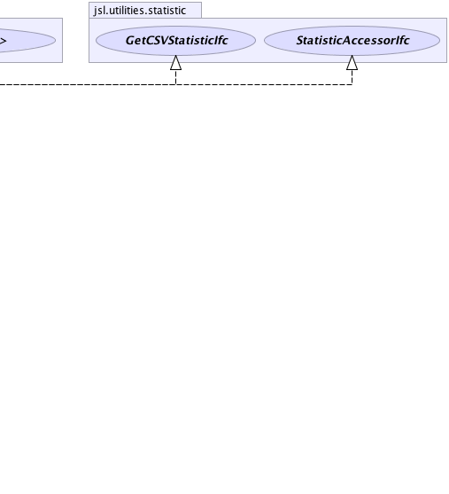

jsl.utilities.statistic.AbstractCollector
jsl.utilities.statistic.AbstractStatistic
jsl.utilities.statistic.AbstractCollector
jsl.utilities.statistic.AbstractStatistic
|
||||||||||
| PREV CLASS NEXT CLASS | FRAMES NO FRAMES | |||||||||
| SUMMARY: NESTED | FIELD | CONSTR | METHOD | DETAIL: FIELD | CONSTR | METHOD | |||||||||
java.lang.Object
public abstract class AbstractStatistic
Serves as an abstract base class for statistical collection.
|  |
| Field Summary | |
|---|---|
static double |
DEFAULT_CONFIDENCE_LEVEL
the default confidence level |
protected double |
myConfidenceLevel
Holds the confidence coefficient for the statistic |
protected double |
myNumMissing
Used to count the number of missing data points presented When a data point having the value of Double.NaN is presented it is excluded from the summary statistics and the number of missing points is noted. |
| Fields inherited from class jsl.utilities.statistic.AbstractCollector |
|---|
myData, myDataArraySize, myId, myName, mySaveCount, mySaveDataFlag, myWeights |
| Fields inherited from interface jsl.utilities.statistic.SaveDataIfc |
|---|
DEFAULT_DATA_ARRAY_SIZE |
| Constructor Summary | |
|---|---|
AbstractStatistic()
|
|
AbstractStatistic(java.lang.String name)
|
|
| Method Summary | |
|---|---|
abstract void |
collect(double x,
double weight)
Collect weighted statistics on the supplied value using the supplied weight |
int |
compareTo(AbstractStatistic stat)
Returns a negative integer, zero, or a positive integer if this object is less than, equal to, or greater than the specified object. |
void |
fillStatistics(java.util.Map<java.lang.String,java.lang.Double> stats)
Fills the map with the statistics |
Interval |
getConfidenceInterval()
Returns a two-sided confidence interval on the mean with 95% confidence level based on StudentT distribution |
Interval |
getConfidenceInterval(double level)
Returns a two-sided confidence interval on the mean with confidence level alpha based on StudentT distribution |
double |
getConfidenceLevel()
Gets the confidence level. |
java.util.List<java.lang.String> |
getCSVHeader()
Gets the comma separated value header as a list of strings |
java.lang.String |
getCSVStatistic()
|
java.lang.String |
getCSVStatisticHeader()
|
java.util.List<java.lang.String> |
getCSVValues()
Returns the values of all the statistics as a list of strings |
double |
getHalfWidth()
Gets the confidence interval half-width. |
double |
getNumberMissing()
When a data point having the value of Double.NaN is presented it is excluded from the summary statistics and the number of missing points is noted. |
double[] |
getStatistics()
Fills up an array with the statistics defined by this interface statistics[0] = getCount(); statistics[1] = getAverage(); statistics[2] = getStandardDeviation(); statistics[3] = getStandardError(); statistics[4] = getHalfWidth(); statistics[5] = getConfidenceLevel(); statistics[6] = getMin(); statistics[7] = getMax(); statistics[8] = getSum(); statistics[9] = getVariance(); statistics[10] = getWeightedAverage(); statistics[11] = getWeightedSum(); statistics[12] = getSumOfWeights(); statistics[13] = getWeightedSumOfSquares(); statistics[14] = getDeviationSumOfSquares(); statistics[15] = getLastValue(); statistics[16] = getLastWeight(); statistics[17] = getKurtosis(); statistics[18] = getSkewness(); statistics[19] = getLag1Covariance(); statistics[20] = getLag1Correlation(); statistics[21] = getVonNeumannLag1TestStatistic(); statistics[22] = getNumberMissing(); |
void |
getStatistics(double[] statistics)
Fills up the supplied array with the statistics defined by this interface index = statistic statistics[0] = getCount(); statistics[1] = getAverage(); statistics[2] = getStandardDeviation(); statistics[3] = getStandardError(); statistics[4] = getHalfWidth(); statistics[5] = getConfidenceLevel(); statistics[6] = getMin(); statistics[7] = getMax(); statistics[8] = getSum(); statistics[9] = getVariance(); statistics[10] = getWeightedAverage(); statistics[11] = getWeightedSum(); statistics[12] = getSumOfWeights(); statistics[13] = getWeightedSumOfSquares(); statistics[14] = getDeviationSumOfSquares(); statistics[15] = getLastValue(); statistics[16] = getLastWeight(); statistics[17] = getKurtosis(); statistics[18] = getSkewness(); statistics[19] = getLag1Covariance(); statistics[20] = getLag1Correlation(); statistics[21] = getVonNeumannLag1TestStatistic(); statistics[22] = getNumberMissing(); The array must be of size 23 or an exception will be thrown |
void |
setConfidenceLevel(double level)
Sets the confidence level for the statistic |
| Methods inherited from class jsl.utilities.statistic.AbstractCollector |
|---|
clearSavedData, collect, collect, collect, collect, collect, collect, collect, getId, getName, getSaveDataOption, getSavedData, getSavedWeights, reset, saveData, setId, setName, setSaveDataArraySizeIncrement, setSaveDataOption |
| Methods inherited from class java.lang.Object |
|---|
clone, equals, finalize, getClass, hashCode, notify, notifyAll, toString, wait, wait, wait |
| Methods inherited from interface jsl.utilities.statistic.StatisticAccessorIfc |
|---|
getAverage, getCount, getDeviationSumOfSquares, getHalfWidth, getKurtosis, getLag1Correlation, getLag1Covariance, getLastValue, getLastWeight, getLeadingDigitRule, getMax, getMin, getName, getSkewness, getStandardDeviation, getStandardError, getSum, getSumOfWeights, getVariance, getVonNeumannLag1TestStatistic, getWeightedAverage, getWeightedSum, getWeightedSumOfSquares, toString |
| Field Detail |
|---|
public static final double DEFAULT_CONFIDENCE_LEVEL
protected double myConfidenceLevel
protected double myNumMissing
| Constructor Detail |
|---|
public AbstractStatistic()
public AbstractStatistic(java.lang.String name)
name - | Method Detail |
|---|
public void setConfidenceLevel(double level)
level - must be in (0, 1)public double getConfidenceLevel()
StatisticAccessorIfc
getConfidenceLevel in interface StatisticAccessorIfc
public abstract void collect(double x,
double weight)
CollectorIfc
collect in interface CollectorIfccollect in class AbstractCollectorx - a double representing the observationweight - a double to be used to weight the observationpublic double getHalfWidth()
StatisticAccessorIfc
getHalfWidth in interface StatisticAccessorIfcpublic Interval getConfidenceInterval()
getConfidenceInterval in interface StatisticAccessorIfcpublic Interval getConfidenceInterval(double level)
getConfidenceInterval in interface StatisticAccessorIfclevel -
public double getNumberMissing()
StatisticAccessorIfc
getNumberMissing in interface StatisticAccessorIfcpublic void getStatistics(double[] statistics)
StatisticAccessorIfc
getStatistics in interface StatisticAccessorIfcpublic double[] getStatistics()
StatisticAccessorIfc
getStatistics in interface StatisticAccessorIfcpublic java.lang.String getCSVStatistic()
getCSVStatistic in interface GetCSVStatisticIfcpublic java.util.List<java.lang.String> getCSVValues()
public java.lang.String getCSVStatisticHeader()
getCSVStatisticHeader in interface GetCSVStatisticIfcpublic java.util.List<java.lang.String> getCSVHeader()
public void fillStatistics(java.util.Map<java.lang.String,java.lang.Double> stats)
stats - public final int compareTo(AbstractStatistic stat)
compareTo in interface java.lang.Comparable<AbstractStatistic>stat - The statistic to compare this statistic to
|
||||||||||
| PREV CLASS NEXT CLASS | FRAMES NO FRAMES | |||||||||
| SUMMARY: NESTED | FIELD | CONSTR | METHOD | DETAIL: FIELD | CONSTR | METHOD | |||||||||